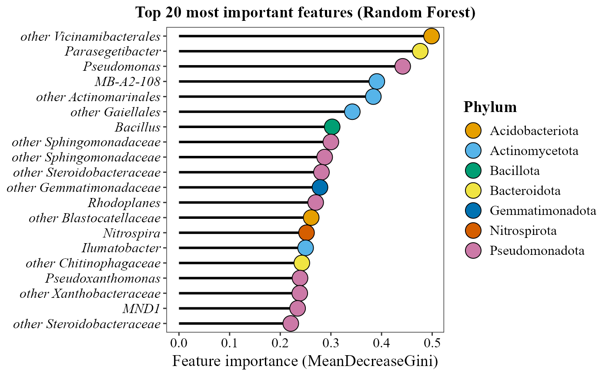

Generate a Lollipop plot from random forest results
Source:R/random_forest_lollipop_plot.R
random_forest_lollipop_plot.RdGenerate a Lollipop plot from random forest results
Usage
random_forest_lollipop_plot(
table,
metadata,
top_n = 15,
size = 8,
variable_to_predict,
group_colors = NULL,
title = NULL,
save_table = FALSE,
table_filename = "randomforest_importance.txt",
x_axis_title = "Feature importance (MeanDecreaseGini)"
)Arguments
- table
Data frame where columns are samples and rows are ASVs or taxa.
- metadata
Data frame containing sample metadata.
- top_n
Number of top features to plot (default = 15).
- size
the size of the point of the lollipop.
- variable_to_predict
Variable to predict from the metadata.
- group_colors
Custom color palette (optional).
- title
Main title for the figure.
- save_table
Logical. If
TRUE, saves the feature-importance table to disk. DefaultFALSE.- table_filename
Character. File path/name for the saved table (used when
save_table = TRUE). Default"randomforest_importance.txt".- x_axis_title
Title for the horizontal (importance) axis. Default
"Feature importance (MeanDecreaseGini)".
Examples
table_path <- system.file("extdata", "tabla_bacteria.txt", package = "MicroBioMeta")
table <- read.delim(table_path, row.names = 1, check.names = FALSE)
metadata_path <- system.file("extdata", "metadata_bacteria.txt", package = "MicroBioMeta")
metadata <- read.delim(metadata_path, check.names = FALSE)
colnames(metadata)[1] <- "SampleID"
random_forest_lollipop_plot(
table = table,
metadata = metadata,
variable_to_predict = "Location",
top_n = 20,
size = 6
)
#> Warning: Note: Some bacterial phylum names have been updated to match NCBI's revised taxonomy:
#> - 'Proteobacteria' changed to 'Pseudomonadota'
#> - 'Actinobacteriota' changed to 'Actinomycetota'
#> - 'Firmicutes' changed to 'Bacillota'
#> Reference: https://ncbiinsights.ncbi.nlm.nih.gov/2021/12/10/ncbi-taxonomy-prokaryote-phyla-added/
